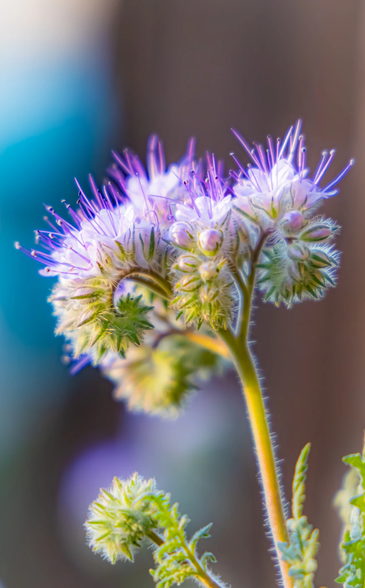
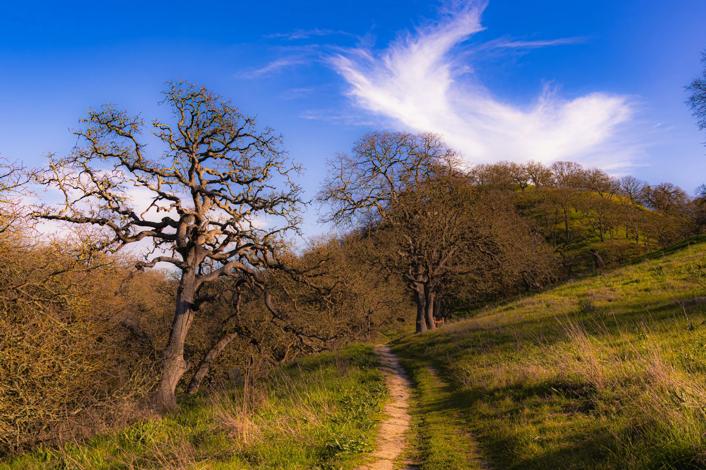
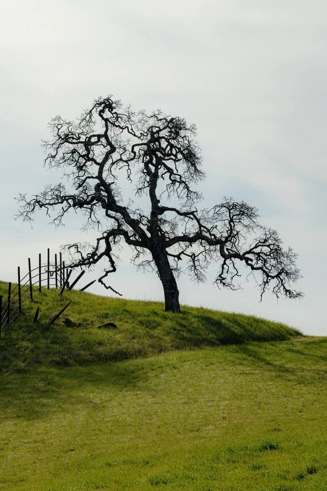

Edition One · The Art of Noticing
The experience comes first.The photography comes second.
Come explore ↓Quiet Wonder
The world has always been this beautiful.
Sometimes the only thing missing is our attention. I photograph the places, lives, weather, and small surprises that ask me to slow down—then share them in the hope that someone else might step outside and begin noticing, too.

A visual journal
Things I Noticed
Small marvels, passing light, and the details that reward a closer look.

Behind the frame
Stories
Photographs become memorable when the experience behind them is allowed to remain.

California, beyond the postcard
Long before the roads and rooftops, the oaks were already here.
They stand through seasons, development, drought, damage, and time. Their missing limbs and weathered bark tell stories without words. I photograph them because they feel less like scenery and more like witnesses.
Read the manifesto →An invitation
Go somewhere close. Look a little longer.
You do not need an extravagant destination. A park, a familiar street, a backyard, or a window may be enough. Curiosity is the beginning.